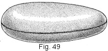
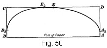
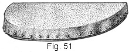
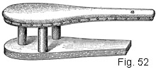

1922—Tailored Pockets
Woman's Institute of Domestic Arts & Sciences, by Mary Brooks Picken
Tailors' Cushions and Press Boards
53. For successful tailoring, it is absolutely essential to have proper devices on hand for pressing, For the pressing of curved seams, such as the bust seams of coats, the hip seams of coats and skirts, and shoulder seams, there is perhaps no better device than what is commonly known by tailors as a ham cushion; in fact, no custom-tailoring establishment is complete without one. Such a cushion, which is illustrated in Fig. 49, consists simply of a covering of white tailors' felt that is carefully stuffed with rags. Ham cushions can be purchased in tailors' supply houses, but a cushion that will prove to be just as serviceable and much less expensive can be made in the home.
54. For a ham cushion there should be purchased at a tailors' supply house 5/8 yd. of 36-in. white tailors' felt. Such felt is very durable, and while it is firm it is not so compact as the felt used for upholstery or for shoes and hats. The quantity of felt mentioned is sufficient for a ham cushion, as it may be cut on the true bias and the correct length obtained in this way. The small pieces of felt that remain after cutting out the covering need not be wasted, either, for they can be used for making a cushion that is just one-fourth as large. A small ham cushion is very useful, as it can be used inside of sleeves, under the armhole seam, and in many places where the large one might be too large or too unhandy. In addition to the felt for either cushion, there should be procured sufficient heavy muslin or galatea for an interlining, and enough clean, old woolen rags for stuffing. Rags from old woolen skirts, coats, or blankets are satisfactory, provided all hard parts are omitted.
55. In order to cut out the covering and the interlining for a ham cushion, it is necessary to have a pattern. Such a pattern may be drafted in the manner shown in Fig. 50, the procedure being as follows: Fold lengthwise through the center a piece of paper that is 14 in. wide and 21 in. long, and, then, with the folded edge next to you, proceed to locate the necessary points for outlining the pattern. Locate point A 1 in. from the right edge of the paper; point B 19 in. to the left of A on the fold; point C 6 in. directly above B; and point D 6 in. directly above A. Then connect A and D, as well as B and C, with a vertical line, and complete the parallelogram by connecting C and D with a horizontal line. With the parallelogram thus drawn, locate points to be used in drawing the pattern lines. Thus, locate point B2 1 ½ in. above B on line BC; point A2 1 in. above A on line A D; point E midway between C and D; and point E2 2 in. to the left of E. Then connect B2 and E2, as well as E and A2, with a well-curved line, as shown in the illustration, being careful to avoid forming points at B2, E2, E, and A2. When the draft is thus made, form the pattern, which when cut out, should be egg-shaped, by cutting, through both thickness of paper, from B, through B2, to E2, and from E2, through E and A2, to A.
56. When the pattern is cut out, place it on a double thickness of the felt and cut out the cushion covering. Do not allow for seams, as the edges of the felt must be whipped together, as shown in Fig. 49. Also cut out the interlining, using the same pattern, but allowing 3/8-in. seams on all edges. With the material cut out, seam the interlining together, and then prepare the filling. To do this, tear and cut old woolen rags into small pieces that are free from hard seams, and then dampen these bits of material so that they will pack very tight. Then proceed to stuff the interlining. Care in packing is very necessary, as the rags must be filled in even and close, so that the outside will be smooth and firm. After making sure that the interlining is stuffed as full as possible and will keep its shape, close the opening of the interlining with diagonal basting and then overhand it closely. With the interlining thus prepared, place the felt over it, and, then, drawing the edges together, overhand them closely, keeping the surface absolutely smooth and as tight as possible.
57. When it is desired to press seams very flat and hard or so well that they will scarcely be visible, it is well to use a tailors' press block, one style of which is shown in Fig. 51. Such a block consists of a 2-in. piece of oak that measures 18 in. on the straight side and 14 in. across, and is covered with two thicknesses of tailors' felt stitched just as tight as possible and tacked in place on the block, as shown.
58. Another device used in pressing tailored work is the tailors' press stand shown in Fig. 52. Such a stand may be made to take the place of a ham cushion, and in addition it has a sleeve board attached, as at a. A tailors' press stand is usually 28 in. long, 7 in. high, and 10 in. wide. It is, however, much more difficult and expensive to make than a ham cushion, and, besides, on account of its weight, it is much more difficult to handle.
TAILORED POCKETS
EXAMINATION QUESTIONS
- Name the standard tailored pockets.
- What governs the size and shape of tailored pockets?
- What are the important considerations in making tailored pockets?
- (a) What kind of lining should be used for the stand portion of a stand pocket?
(b) In making a stand pocket, why is it necessary to run a basting thread through the mark-stitching of the stand portion after the lining is applied? - (a) Why should the lengthwise threads of the reinforcing strip of a stand pocket run parallel with the lower edge of the stand?
(b) Why must care be used in cutting a pocket slit? - Submit a sampler of a stand pocket made in striped woolen material.
- When two flap pockets are used at the sides of a garment, why is it necessary to mark-stitch the pattern lines?
- In making the flap for a flap pocket, why is the upper edge left open?
- (a) Why, in the flap pocket, is a strip of the garment material stitched to one pouch part?
(b) What is the purpose of the welt in a flap pocket? - (a) Why, in a flap pocket, is it necessary to secure the ends of the pocket opening with bar-stitches?
(b) When is it advisable to overcast the edges of the material used for the pouch of a pocket? - Of what value is the pattern used for outlining a welt pocket in the form of a reversed curve?
- Why, in a welt pocket, is it necessary to keep the stitching that outlines the slit even?
- Why are the welt edges of a welt pocket basted; together in making such a pocket?
- In the planning of pockets for a garment, what points should be considered?
- What determines the width of stitching on a pocket?
- In a wash welt pocket, why is plain material desirable for the pouch portion ?
- (a) How may the severe plainness of simple patch pockets be relieved?
(b) If a strap is used at the top of a patch pocket, how is the upper edge of the underneath piece finished? - When is it advisable to use a stay strip at the back of a patch pocket ?
- (a) What kind of braid is most desirable for bound pockets?
(b) When are pockets bound with braid employed? - At what stage in the making of a bound pocket is the first pouch portion attached?